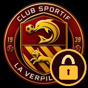

⚽ V6.6 — Deux applications
Aperçu illustratif indépendant. Les deux raccourcis ouvrent la même base de tournois, mais une interface différente.
CSV SpectateurAccès public
Matchs et résultats
Journées publiées uniquement. Aucune saisie des scores.

CSV OrganisateurAccès contrôlé
Accès Organisateur
PIN provisoire ou compte Firebase organisateur.
Le PIN n’est pas une sécurité Firebase. Avant le lancement officiel, vérifier les règles serveur et l’authentification.